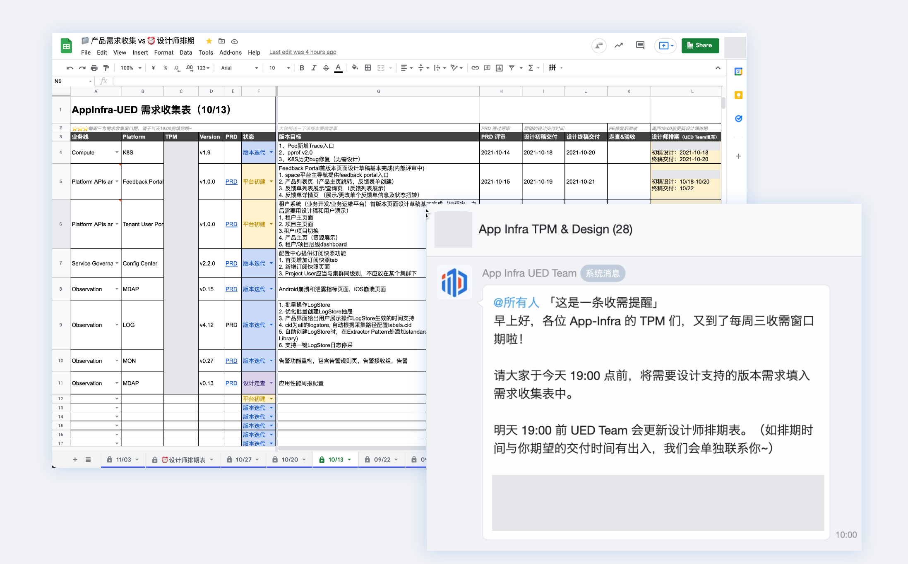
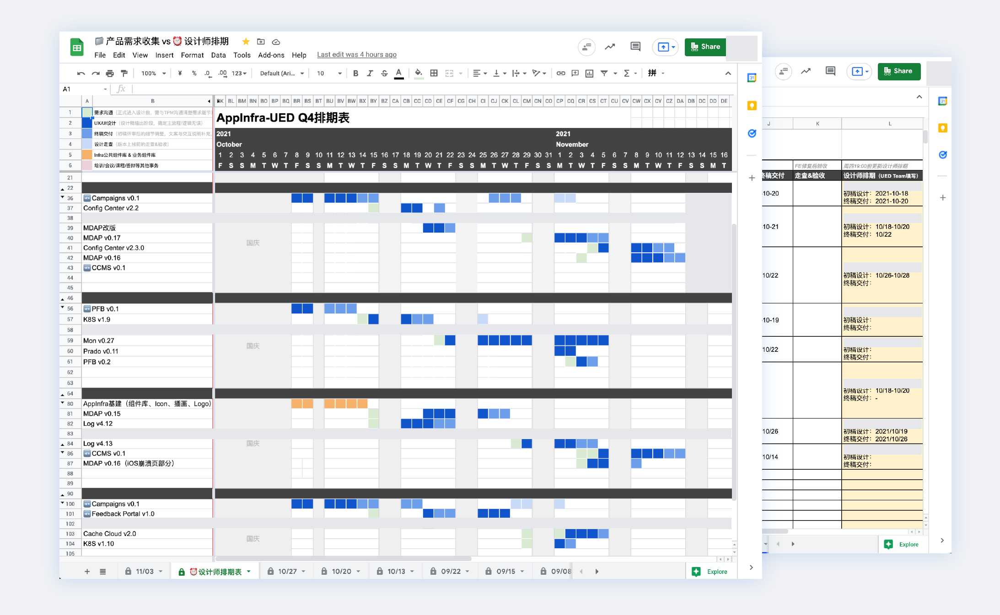
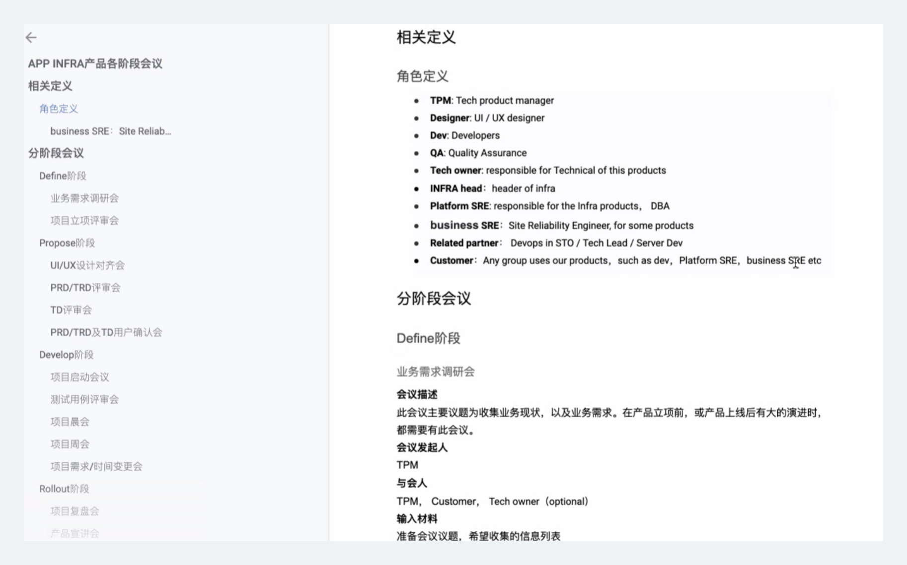
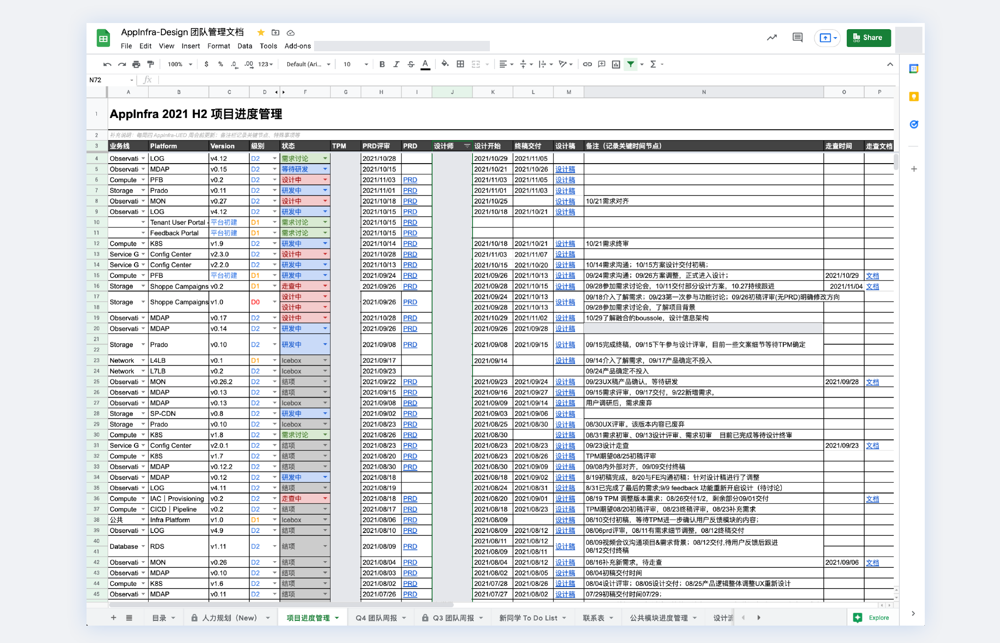

01 / 团队与方法
把设计以外的时间也排进去
2021 年的收需和排期记录里，我们约定每周三由合作方提交版本目标、PRD 与预期节点，周四反馈设计排期。我结合需求复杂度、成员能力和可用时间安排投入，排不上期的需求再单独沟通调整。
日历里放入了需求沟通、设计、终稿交付、走查和公共建设。只计算画页面的时间，很难判断一个人是否还有余力；一项工作交稿以后，后面的沟通和实现核对也还没有结束。
从统一收需到可执行的排期
定期收需
集中查看版本目标、PRD 与预期节点，明确反馈时间。
2021 Q3 汇报 · 第 78 页「定期收需」 · 截图节选

放大查看截图节选 ↗协调排期
将沟通、设计、交付、走查和公共建设放进同一日历。
2021 Q3 汇报 · 第 80 页「排期」 · 截图节选

放大查看截图节选 ↗排期之外，阶段会议明确需要哪些人参与，周会前更新的项目表记录进展与卡点。这些记录让大家能继续追问：现在等谁，下一步做什么，交付以后有没有完成走查。表格本身解决不了分歧，但至少可以让讨论落在同一份进展上。
从跨角色协作到交付跟踪
分阶段协作
按 Define、Propose、Develop、Rollout 阶段对齐参与角色与会议。
2021 Q3 汇报 · 第 81 页协作记录 · 截图节选

放大查看截图节选 ↗持续跟进交付
对照评审、设计开始、终稿交付与走查节点，记录当前状态。
2021 Q3 汇报 · 第 82 页项目跟踪 · 截图节选

放大查看截图节选 ↗02 / 团队与方法
有空的人不一定最适合接手
当时采用固定主责与公共人力池结合的方式。成员有主要负责的产品线，也会支持其他需求，以应对不同产品的需求高峰。
临时支援需要付出成本。除了有没有时间，还要看熟不熟悉业务，需要谁帮助理解，切换后会不会打断原有工作。更适合稳定任务的成员，就减少频繁切换；复杂度高的任务，则要谨慎匹配能力与支持条件。
我会把产品地图、设计依据和 InfraD 指南作为进入业务的起点，再通过共建模块和方案评审讨论具体取舍。项目设计师负责自己的方案和推进，专业支持要帮助他逐步形成独立判断。
后来支持 DataSuite，也经历了先承担关键设计、建立领域认识，再让成员接续的过程。那里已有完整平台，工作的重点是改善既有体验、建立专业设计支持，不能照搬早期产品初建时的分工。
03 / 团队与方法
交接以后还要有人接住问题
2022 年专职 Manager 到岗后，我转为分组 PIC，后续职责也随业务分工继续变化。早期的需求、人力与交付协调，并不包含全部正式人事权限。角色改变时，资源怎样协调、哪些决定由谁作出，都需要重新说清楚。
质量支持也在后续阶段继续发展。2025 年，我参与团队体验度量、自查表和评审规则的共建。自查帮助补齐流程与状态，评审讨论风险与改法，走查核对实现。评审意见需要具体到下一位协作者能够继续处理，不能只留下一个分数或“体验不好”的评价。
例如讨论权限异常时，可以沿着触发条件检查用户在哪一步中断、输入能否保留、如何恢复。这是检查方法；问题修正后，还需要回到相同分支核对。
把一个产品交给下一位设计师，需要留下方案依据、业务限制和未决问题。团队扩张、业务稳定或职责变化时，原来的安排都可能需要调整。接手的人知道哪些事情可以自行决定，哪些需要找谁协同，工作才有机会持续推进。